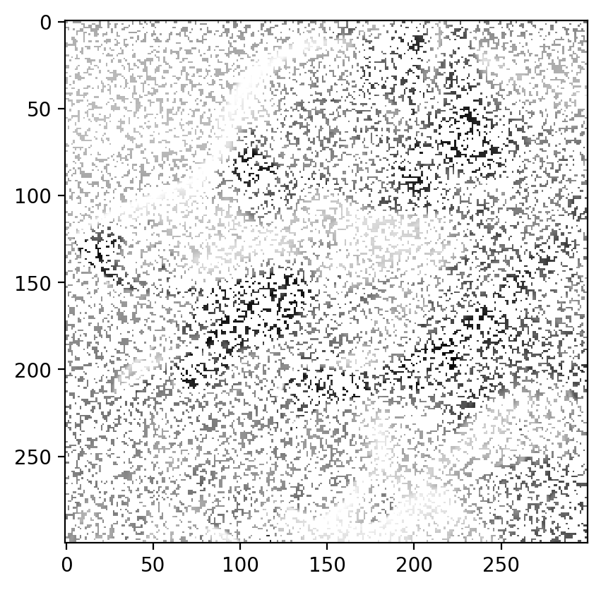
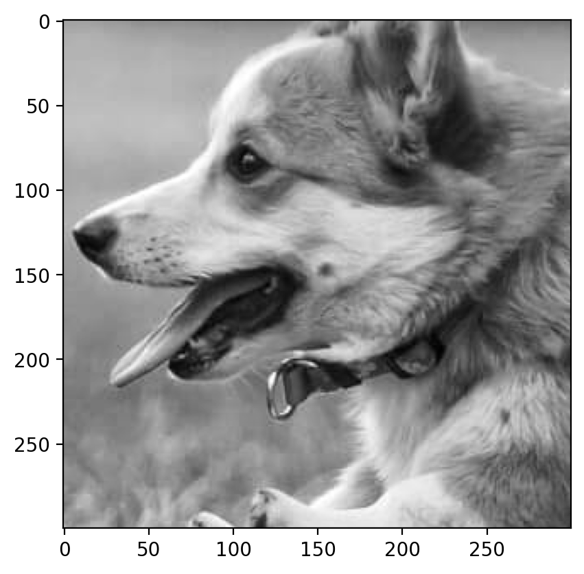
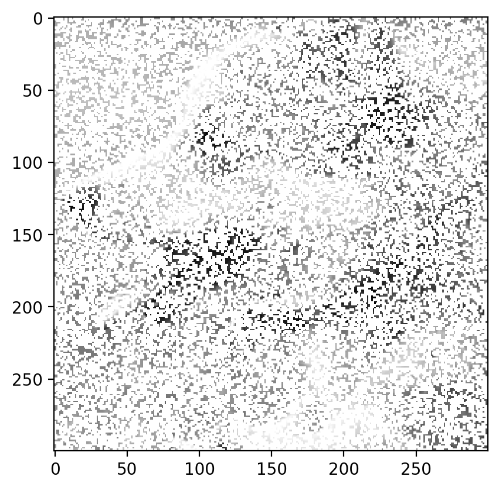
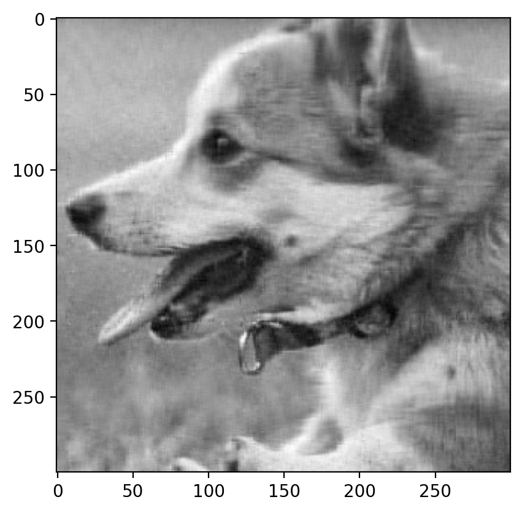

import numpy as np
import matplotlib.pyplot as plt
import pandas as pd
import seaborn as sns
%matplotlib inline
%config InlineBackend.figure_format = 'retina'Movie Recommendation using Matrix Factorization
Movie Recommendation using Matrix Factorization
# Now working with real data
# Load the data
df = pd.read_excel("Movie-Recommendation-2024-Fall.xlsx")
df.head(10)| Timestamp | Your name | Sholay | Swades (We The People) | The Matrix (I) | Interstellar | Dangal | Taare Zameen Par | Shawshank Redemption | The Dark Knight | Notting Hill | Uri: The Surgical Strike | |
|---|---|---|---|---|---|---|---|---|---|---|---|---|
| 0 | 2024-09-09 18:12:41.227 | P.Sai Keerthana | 3.0 | 5.0 | 5.0 | 4.0 | 5.0 | 5.0 | 3.0 | 3.0 | 4.0 | 5.0 |
| 1 | 2024-09-09 18:12:47.984 | Pradeep | 5.0 | 5.0 | 5.0 | 5.0 | 5.0 | 5.0 | 4.0 | 5.0 | 3.0 | 5.0 |
| 2 | 2024-09-09 18:12:54.979 | Uday Sankar Gottipalli | 3.0 | NaN | 5.0 | 5.0 | 5.0 | NaN | NaN | NaN | NaN | 4.0 |
| 3 | 2024-09-09 18:12:58.795 | Aashmun Gupta | 4.0 | 5.0 | 4.0 | 5.0 | 3.0 | 5.0 | 1.0 | 3.0 | 4.0 | 4.0 |
| 4 | 2024-09-09 18:13:01.629 | Siddharth Mohanty | 4.0 | 3.0 | 5.0 | 5.0 | 5.0 | 5.0 | 3.0 | 5.0 | 2.0 | 4.0 |
| 5 | 2024-09-09 18:13:17.288 | Ayush Shrivastava | 4.0 | 4.0 | 5.0 | 5.0 | 3.0 | 4.0 | NaN | NaN | NaN | 4.0 |
| 6 | 2024-09-09 18:15:18.092 | Abhay Pisharodi | 3.0 | NaN | NaN | 3.0 | 4.0 | 4.0 | NaN | 4.0 | NaN | 5.0 |
| 7 | 2024-09-09 18:16:12.892 | Shreya Mali | NaN | NaN | NaN | NaN | 3.0 | 4.0 | NaN | NaN | NaN | NaN |
| 8 | 2024-09-09 18:17:39.678 | Shounak Ranade | 3.0 | NaN | 5.0 | 5.0 | 4.0 | 5.0 | 5.0 | 3.0 | NaN | 4.0 |
| 9 | 2024-09-09 18:17:58.374 | Prathamesh P. Shanbhag | 3.0 | 4.0 | 5.0 | 4.0 | 4.0 | 4.0 | NaN | NaN | NaN | 5.0 |
# Discard the timestamp column
df = df.drop('Timestamp', axis=1)
# Make the "Your Name" column the index
df = df.set_index('Your name')
df| Sholay | Swades (We The People) | The Matrix (I) | Interstellar | Dangal | Taare Zameen Par | Shawshank Redemption | The Dark Knight | Notting Hill | Uri: The Surgical Strike | |
|---|---|---|---|---|---|---|---|---|---|---|
| Your name | ||||||||||
| P.Sai Keerthana | 3.0 | 5.0 | 5.0 | 4.0 | 5.0 | 5.0 | 3.0 | 3.0 | 4.0 | 5.0 |
| Pradeep | 5.0 | 5.0 | 5.0 | 5.0 | 5.0 | 5.0 | 4.0 | 5.0 | 3.0 | 5.0 |
| Uday Sankar Gottipalli | 3.0 | NaN | 5.0 | 5.0 | 5.0 | NaN | NaN | NaN | NaN | 4.0 |
| Aashmun Gupta | 4.0 | 5.0 | 4.0 | 5.0 | 3.0 | 5.0 | 1.0 | 3.0 | 4.0 | 4.0 |
| Siddharth Mohanty | 4.0 | 3.0 | 5.0 | 5.0 | 5.0 | 5.0 | 3.0 | 5.0 | 2.0 | 4.0 |
| ... | ... | ... | ... | ... | ... | ... | ... | ... | ... | ... |
| Vadithe Venkat Akhilesh Naik | 4.0 | 3.0 | 4.0 | 4.0 | 5.0 | 5.0 | 3.0 | 5.0 | 3.0 | 5.0 |
| Rudra | 3.0 | NaN | 5.0 | 5.0 | 3.0 | 4.0 | 5.0 | 5.0 | 3.0 | 1.0 |
| Mukesh | 3.0 | 4.0 | 5.0 | 5.0 | 3.0 | 3.0 | 5.0 | 5.0 | 4.0 | 4.0 |
| Niyati siju | 5.0 | 5.0 | 5.0 | 5.0 | 4.0 | 5.0 | 2.0 | 2.0 | 2.0 | 4.0 |
| Rahul Singal | 2.0 | NaN | 1.0 | NaN | 3.0 | 1.0 | NaN | NaN | NaN | 1.0 |
83 rows × 10 columns
df.indexIndex(['P.Sai Keerthana ', 'Pradeep ', 'Uday Sankar Gottipalli',
'Aashmun Gupta', 'Siddharth Mohanty', 'Ayush Shrivastava',
'Abhay Pisharodi', 'Shreya Mali', 'Shounak Ranade',
'Prathamesh P. Shanbhag', 'Suruchi Hardaha', 'Balkrishna Sehra',
'Het Shukla', 'N. Eshwar karthikeya ', 'Dhruv Patel',
'Shreyas Dharmatti ', 'Mohit', 'Praveen Rathod ', 'Dinesh', 'Rahul',
'Devansh Lodha', 'Abhinav ', 'Tejas Lohia', 'Laksh Jain ',
'Burra Saharsh', 'Vanshri', 'Karan Gandhi', 'Romit Mohane ',
'Vedant Acharya', 'Abhiroop Chintalapudi', 'Yash sahu', 'Dinesh',
'Manish Prasad', 'Parthiv', 'Shivansh Soni',
'Chepuri Venkata Naga Thrisha', 'Abhinav Kumar', 'Anurag',
'Bhavya Parmar ', 'Soham Shrivastava ', 'Aditya Borate', 'Hemant ',
'Abhinav Singh Yadav ', 'Arul Singh', 'Harinarayan J ',
'uday kumar jarapala', 'Sailesh Panda', 'Yash Sonone ', 'Sayak Dutta',
'Biswajit Rakshit', 'Praanshu ', 'Samarth Sonawane ',
'Shah Harshil Hardik ', 'Paras Prashant Shirvale ', 'Venkatakrishnan E',
'Patel Ridham Vijaykumar', 'Kaushal', 'Suriya', 'Nishchay Bhutoria',
'Darpana', 'Umang Shikarvar', 'Rishabh Jogani', 'Shriniket Behera',
'Srivaths P', 'M. Lakshmi Manasa ', 'Afraz', 'Arpita Kumawat ',
'Naveen pal', 'Naveen pal', 'Vedant', 'Tanishq Bhushan Chaudhari',
'Shardul Junagade', 'Soham Gaonkar', 'Xyz', 'Akash Gupta ',
'Pranav Somase', 'Maharshi Patel', 'Susmita R',
'Vadithe Venkat Akhilesh Naik', 'Rudra', 'Mukesh ', 'Niyati siju ',
'Rahul Singal'],
dtype='object', name='Your name')# Get index for user and movie
user = 'Ayush Shrivastava'
print(user in df.index)
# Get the movie ratings for user
user_ratings = df.loc[user]
user_ratingsTrueSholay 4.0
Swades (We The People) 4.0
The Matrix (I) 5.0
Interstellar 5.0
Dangal 3.0
Taare Zameen Par 4.0
Shawshank Redemption NaN
The Dark Knight NaN
Notting Hill NaN
Uri: The Surgical Strike 4.0
Name: Ayush Shrivastava, dtype: float64# Number of missing values
df.isnull().sum()Sholay 20
Swades (We The People) 35
The Matrix (I) 6
Interstellar 14
Dangal 4
Taare Zameen Par 8
Shawshank Redemption 35
The Dark Knight 25
Notting Hill 45
Uri: The Surgical Strike 12
dtype: int64# Generic Matrix Factorization (without missing values)
import torch
import torch.nn as nn
import torch.nn.functional as F
import torch.optim as optim
n_users, n_movies = 20, 10
# A is a matrix of size (n_users, n_movies) randomly generated values between 1 and 5
A = torch.randint(1, 6, (n_users, n_movies), dtype=torch.float)
Atensor([[3., 5., 1., 2., 2., 5., 1., 5., 5., 3.],
[1., 5., 4., 4., 5., 5., 5., 1., 4., 2.],
[3., 3., 5., 1., 1., 5., 5., 1., 1., 2.],
[4., 3., 2., 2., 5., 4., 4., 5., 2., 1.],
[4., 1., 1., 5., 4., 2., 2., 4., 3., 1.],
[4., 2., 5., 4., 3., 5., 5., 3., 4., 3.],
[1., 3., 1., 3., 1., 3., 5., 4., 1., 2.],
[1., 1., 2., 4., 3., 3., 2., 1., 5., 1.],
[3., 1., 1., 1., 5., 4., 2., 5., 5., 2.],
[2., 2., 1., 5., 3., 5., 3., 2., 1., 4.],
[3., 3., 3., 4., 4., 1., 5., 3., 4., 4.],
[5., 1., 1., 3., 2., 2., 4., 5., 2., 3.],
[3., 1., 4., 1., 1., 3., 3., 3., 1., 2.],
[1., 5., 1., 3., 3., 4., 1., 4., 2., 3.],
[1., 2., 1., 3., 5., 4., 4., 1., 3., 3.],
[3., 4., 3., 4., 4., 2., 2., 5., 4., 2.],
[1., 4., 4., 4., 4., 1., 3., 5., 2., 3.],
[1., 5., 4., 3., 3., 2., 3., 2., 3., 4.],
[5., 4., 2., 3., 2., 4., 5., 2., 1., 1.],
[4., 4., 2., 1., 2., 3., 4., 1., 4., 4.]])A.shapetorch.Size([20, 10])Let us decompose A as WH. W is of shape (n, k) and H is of shape (k, n). We can write the above equation as: A = WH
# Randomly initialize A and B
# Set device to cuda:0 if available and on Linux
# If on mac try mps
if torch.cuda.is_available():
device = torch.device("cuda:0")
elif torch.backends.mps.is_available():
device = torch.device("mps")
else:
device = torch.device("cpu")
print("Working on device: ", device)
r = 3
W = torch.randn(n_users, r, requires_grad=True, device=device)
H = torch.randn(r, n_movies, requires_grad=True, device=device)
A = A.to(device)
# Compute the loss
with torch.no_grad():
loss = torch.norm(torch.mm(W, H) - A)
print(loss)Working on device: mps
tensor(50.2602, device='mps:0')with torch.no_grad():
temp_pred = torch.mm(W, H)
bw_0_1 = torch.nn.Sigmoid()(temp_pred)
bw_0_5 = 5*bw_0_1
print(temp_pred.max(), temp_pred.min())
print(bw_0_1.max(), bw_0_1.min())
print(bw_0_5.max(), bw_0_5.min())tensor(4.2534, device='mps:0') tensor(-6.2291, device='mps:0')
tensor(0.9860, device='mps:0') tensor(0.0020, device='mps:0')
tensor(4.9299, device='mps:0') tensor(0.0098, device='mps:0')pd.DataFrame(torch.mm(W, H).cpu().detach().numpy()).head()| 0 | 1 | 2 | 3 | 4 | 5 | 6 | 7 | 8 | 9 | |
|---|---|---|---|---|---|---|---|---|---|---|
| 0 | -0.891001 | -0.634515 | -3.235490 | -1.123262 | -0.822733 | 0.247268 | -0.177382 | -0.227028 | -1.626003 | 1.122110 |
| 1 | -0.877492 | -0.278806 | -1.831263 | -0.834423 | -0.545472 | 0.780769 | -0.330289 | -0.112227 | -0.676177 | 0.701097 |
| 2 | -0.264974 | -2.991497 | -2.802118 | 0.335193 | -0.957647 | 0.119414 | -1.969304 | 2.189706 | -1.220401 | 3.390876 |
| 3 | -2.748779 | -0.559342 | -5.203822 | -2.586238 | -1.577665 | 2.597816 | -0.933461 | -0.491536 | -1.794108 | 1.846012 |
| 4 | 1.951718 | 0.157127 | 2.712191 | 1.634342 | 0.929842 | -2.237743 | 0.785591 | 0.256963 | 0.600561 | -1.029533 |
pd.DataFrame(A.cpu().detach().numpy()).head()| 0 | 1 | 2 | 3 | 4 | 5 | 6 | 7 | 8 | 9 | |
|---|---|---|---|---|---|---|---|---|---|---|
| 0 | 3.0 | 4.0 | 2.0 | 5.0 | 5.0 | 2.0 | 2.0 | 1.0 | 5.0 | 1.0 |
| 1 | 5.0 | 2.0 | 5.0 | 1.0 | 4.0 | 5.0 | 4.0 | 4.0 | 5.0 | 5.0 |
| 2 | 5.0 | 5.0 | 5.0 | 2.0 | 2.0 | 3.0 | 1.0 | 2.0 | 5.0 | 1.0 |
| 3 | 3.0 | 5.0 | 3.0 | 5.0 | 2.0 | 5.0 | 2.0 | 4.0 | 1.0 | 5.0 |
| 4 | 3.0 | 4.0 | 4.0 | 1.0 | 1.0 | 5.0 | 3.0 | 4.0 | 5.0 | 1.0 |
# Optimizer
optimizer = optim.Adam([W, H], lr=0.01)
# Train the model
for i in range(600):
# Compute the loss
loss = torch.norm(torch.mm(W, H) - A)
# Zero the gradients
optimizer.zero_grad()
# Backpropagate
loss.backward()
# Update the parameters
optimizer.step()
# Print the loss
if i % 10 == 0:
print(i, loss.item())0 55.518882751464844
10 52.659767150878906
20 50.37566375732422
30 48.51186752319336
40 46.83131790161133
50 45.094539642333984
60 43.114288330078125
70 40.78749084472656
80 38.10878372192383
90 35.157928466796875
100 32.074623107910156
110 29.021379470825195
120 26.15049934387207
130 23.621992111206055
140 21.566579818725586
150 20.013381958007812
160 18.89710235595703
170 18.127681732177734
180 17.621126174926758
190 17.2957820892334
200 17.079294204711914
210 16.919897079467773
220 16.787397384643555
230 16.666202545166016
240 16.548551559448242
250 16.430585861206055
260 16.310630798339844
270 16.188627243041992
280 16.06583595275879
290 15.944452285766602
300 15.82705020904541
310 15.71599006652832
320 15.612943649291992
330 15.518715858459473
340 15.433331489562988
350 15.356307983398438
360 15.286922454833984
370 15.224400520324707
380 15.168001174926758
390 15.117039680480957
400 15.070890426635742
410 15.028966903686523
420 14.990720748901367
430 14.955638885498047
440 14.923242568969727
450 14.893086433410645
460 14.864763259887695
470 14.837905883789062
480 14.812182426452637
490 14.78730297088623
500 14.76301097869873
510 14.739081382751465
520 14.715320587158203
530 14.691561698913574
540 14.667658805847168
550 14.643492698669434
560 14.618959426879883
570 14.593977928161621
580 14.568486213684082
590 14.542439460754395pd.DataFrame(torch.mm(W, H).cpu().detach().numpy()).head(2)| 0 | 1 | 2 | 3 | 4 | 5 | 6 | 7 | 8 | 9 | |
|---|---|---|---|---|---|---|---|---|---|---|
| 0 | 2.507077 | 2.882409 | 1.014812 | 3.618050 | 4.393669 | 4.244705 | 2.526482 | 3.759181 | 4.175953 | 2.472470 |
| 1 | 2.096234 | 4.719135 | 3.403720 | 3.538269 | 3.727524 | 5.825880 | 4.797643 | 1.286691 | 3.555986 | 3.319029 |
with torch.no_grad():
pred = torch.mm(W, H)
print(pred)tensor([[2.5071, 2.8824, 1.0148, 3.6180, 4.3937, 4.2447, 2.5265, 3.7592, 4.1760,
2.4725],
[2.0962, 4.7191, 3.4037, 3.5383, 3.7275, 5.8259, 4.7976, 1.2867, 3.5560,
3.3190],
[1.9424, 3.8889, 4.4717, 2.1537, 1.5326, 3.5554, 4.9624, 0.3696, 1.3432,
2.7223],
[3.2004, 2.8246, 2.0544, 3.4926, 3.8315, 3.3191, 3.2242, 4.3713, 3.5237,
2.6092],
[3.1014, 1.7170, 0.8792, 3.1483, 3.6712, 2.1976, 1.9481, 5.0449, 3.3680,
1.9746],
[3.4649, 4.0731, 3.9972, 3.6500, 3.5021, 4.1153, 5.0495, 3.4916, 3.1635,
3.3433],
[2.4187, 2.5760, 2.6503, 2.4030, 2.2778, 2.4943, 3.3048, 2.5503, 2.0379,
2.1813],
[1.4519, 2.4073, 0.8205, 2.5799, 3.1635, 3.6162, 1.9812, 1.9655, 3.0497,
1.8606],
[2.9072, 2.0137, 0.5374, 3.4440, 4.2075, 2.9997, 1.8686, 4.8841, 3.9363,
2.1061],
[1.8149, 3.1825, 1.7480, 2.9721, 3.4117, 4.3003, 2.9872, 1.9706, 3.2621,
2.3937],
[3.6335, 3.1765, 3.4501, 3.3264, 3.1627, 2.8898, 4.2959, 4.2345, 2.7955,
2.8895],
[3.6077, 1.9201, 2.1290, 2.9908, 3.0406, 1.6020, 2.8706, 5.1514, 2.6693,
2.1967],
[2.5846, 2.2309, 3.2388, 1.9116, 1.4077, 1.4257, 3.4981, 2.5014, 1.1339,
1.9999],
[1.9620, 2.6912, 1.1617, 2.9910, 3.5664, 3.8354, 2.4170, 2.6666, 3.3997,
2.1766],
[1.4638, 3.2153, 1.3959, 2.9428, 3.5207, 4.6469, 2.7373, 1.5462, 3.4142,
2.3180],
[3.6219, 2.5907, 2.2168, 3.5091, 3.7423, 2.7442, 3.2718, 5.0664, 3.3826,
2.5968],
[3.6559, 2.6337, 3.2100, 3.0238, 2.7970, 2.0870, 3.8787, 4.4767, 2.4195,
2.5847],
[2.5847, 3.4608, 3.6446, 2.7093, 2.4208, 3.3422, 4.3718, 2.1372, 2.1672,
2.7134],
[2.5238, 3.3669, 3.3085, 2.7727, 2.6074, 3.4258, 4.1167, 2.2515, 2.3633,
2.6544],
[2.2396, 3.3835, 3.0556, 2.7231, 2.6510, 3.6647, 3.9279, 1.8880, 2.4411,
2.5856]], device='mps:0')pred.max(), pred.min()(tensor(5.8259, device='mps:0'), tensor(0.3696, device='mps:0'))pd.DataFrame(A.cpu()).head(2)| 0 | 1 | 2 | 3 | 4 | 5 | 6 | 7 | 8 | 9 | |
|---|---|---|---|---|---|---|---|---|---|---|
| 0 | 3.0 | 5.0 | 1.0 | 2.0 | 2.0 | 5.0 | 1.0 | 5.0 | 5.0 | 3.0 |
| 1 | 1.0 | 5.0 | 4.0 | 4.0 | 5.0 | 5.0 | 5.0 | 1.0 | 4.0 | 2.0 |
def factorize(A, k, device=torch.device("cpu")):
"""Factorize the matrix A into W and H
A: input matrix of size (n_users, n_movies)
k: number of latent features
Returns W and H
W: matrix of size (n_users, k)
H: matrix of size (k, n_movies)
"""
A = A.to(device)
# Randomly initialize W and H
W = torch.randn(A.shape[0], k, requires_grad=True, device=device)
H = torch.randn(k, A.shape[1], requires_grad=True, device=device)
# Optimizer
optimizer = optim.Adam([W, H], lr=0.01)
# Train the model
for i in range(1000):
# Compute the loss
loss = torch.norm(torch.mm(W, H) - A)
# Zero the gradients
optimizer.zero_grad()
# Backpropagate
loss.backward()
# Update the parameters
optimizer.step()
return W, H, lossfor k in [1, 2, 3, 4, 5, 6, 9]:
W, H, loss = factorize(A, k, device=device)
print(k, loss.item())1 18.47580909729004
2 16.0474853515625
3 13.883170127868652
4 12.110709190368652
5 10.14443302154541
6 8.560541152954102
9 3.077495813369751pd.DataFrame(torch.mm(W,H).cpu().detach().numpy()).head(2)| 0 | 1 | 2 | 3 | 4 | 5 | 6 | 7 | 8 | 9 | |
|---|---|---|---|---|---|---|---|---|---|---|
| 0 | 3.221090 | 5.013057 | 1.102975 | 1.975984 | 2.243918 | 5.007381 | 0.727418 | 4.854879 | 4.776544 | 3.170928 |
| 1 | 1.150956 | 5.008823 | 4.070340 | 3.983593 | 5.166485 | 5.005116 | 4.813902 | 0.900851 | 3.847399 | 2.116858 |
pd.DataFrame(A.cpu()).head(2)| 0 | 1 | 2 | 3 | 4 | 5 | 6 | 7 | 8 | 9 | |
|---|---|---|---|---|---|---|---|---|---|---|
| 0 | 3.0 | 5.0 | 1.0 | 2.0 | 2.0 | 5.0 | 1.0 | 5.0 | 5.0 | 3.0 |
| 1 | 1.0 | 5.0 | 4.0 | 4.0 | 5.0 | 5.0 | 5.0 | 1.0 | 4.0 | 2.0 |
x_uniform2d = torch.rand(1000, 2)
# satter plot
plt.scatter(x_uniform2d[:, 0], x_uniform2d[:, 1])
# Check values of x_uniform2d < 0.5 and color them red
mask = x_uniform2d < 0.5
print(mask)tensor([[ True, True],
[ True, True],
[ True, True],
...,
[ True, True],
[False, True],
[False, True]])# With missing values
# Randomly replace some entries with NaN
A = torch.randint(1, 6, (n_users, n_movies), dtype=torch.float)
A[torch.rand(A.shape) < 0.5] = float('nan')
Atensor([[5., nan, nan, nan, 3., nan, nan, nan, 2., nan],
[nan, nan, 1., nan, 1., nan, nan, 3., 5., 1.],
[3., nan, nan, nan, 4., 1., nan, nan, nan, nan],
[nan, nan, nan, nan, nan, 5., 5., nan, 3., nan],
[2., 3., nan, 2., 1., nan, nan, 1., 1., nan],
[nan, 4., nan, 3., 5., nan, 3., 4., 2., 2.],
[nan, nan, nan, nan, nan, 2., 1., 5., 2., nan],
[5., 5., nan, nan, 1., nan, nan, nan, 4., 4.],
[nan, nan, nan, nan, 3., nan, nan, nan, 2., 4.],
[nan, nan, nan, nan, nan, 3., 2., 3., 5., 5.],
[nan, 4., nan, nan, 2., nan, 2., nan, nan, nan],
[nan, 2., 3., nan, 4., nan, nan, 4., nan, 2.],
[nan, nan, 2., 2., 4., 2., 2., 3., nan, nan],
[3., nan, 1., nan, nan, 3., nan, nan, 1., nan],
[nan, 2., nan, nan, 5., nan, nan, 2., 1., nan],
[nan, 2., nan, nan, 5., nan, 4., nan, nan, 1.],
[nan, nan, nan, nan, 1., 3., 2., 3., 1., nan],
[nan, nan, nan, 3., nan, nan, nan, 3., 4., 1.],
[nan, 1., 5., 1., nan, nan, 2., nan, 2., nan],
[2., 1., nan, nan, nan, nan, nan, nan, nan, 5.]])W, H, loss = factorize(A, 2, device=device)
losstensor(nan, device='mps:0', grad_fn=<NormBackward1>)As expected, the above function does not work. Our current loss function does not handle missing values.
A.shapetorch.Size([20, 10])mask = ~torch.isnan(A)
masktensor([[ True, False, False, False, True, False, False, False, True, False],
[False, False, True, False, True, False, False, True, True, True],
[ True, False, False, False, True, True, False, False, False, False],
[False, False, False, False, False, True, True, False, True, False],
[ True, True, False, True, True, False, False, True, True, False],
[False, True, False, True, True, False, True, True, True, True],
[False, False, False, False, False, True, True, True, True, False],
[ True, True, False, False, True, False, False, False, True, True],
[False, False, False, False, True, False, False, False, True, True],
[False, False, False, False, False, True, True, True, True, True],
[False, True, False, False, True, False, True, False, False, False],
[False, True, True, False, True, False, False, True, False, True],
[False, False, True, True, True, True, True, True, False, False],
[ True, False, True, False, False, True, False, False, True, False],
[False, True, False, False, True, False, False, True, True, False],
[False, True, False, False, True, False, True, False, False, True],
[False, False, False, False, True, True, True, True, True, False],
[False, False, False, True, False, False, False, True, True, True],
[False, True, True, True, False, False, True, False, True, False],
[ True, True, False, False, False, False, False, False, False, True]])mask.sum()tensor(87)W = torch.randn(A.shape[0], k, requires_grad=True, device=device)
H = torch.randn(k, A.shape[1], requires_grad=True, device=device)
diff_matrix = torch.mm(W, H)-A.to(device)
diff_matrix.shapetorch.Size([20, 10])diff_matrixtensor([[-6.9854, nan, nan, nan, 2.5382, nan, nan, nan,
-3.3296, nan],
[ nan, nan, -4.0131, nan, -6.2010, nan, nan, -3.9650,
-6.5180, 0.9829],
[-1.0404, nan, nan, nan, -4.7079, -0.7452, nan, nan,
nan, nan],
[ nan, nan, nan, nan, nan, -6.6035, -6.2113, nan,
-5.2806, nan],
[ 2.2240, -0.5113, nan, -1.0281, -0.3319, nan, nan, -1.0290,
-8.5193, nan],
[ nan, -1.5060, nan, -1.0225, -5.9332, nan, 3.1254, -1.2558,
-7.6531, -1.3446],
[ nan, nan, nan, nan, nan, -1.1617, 1.4732, -4.9664,
-6.6226, nan],
[-2.9062, -4.3373, nan, nan, -3.4020, nan, nan, nan,
-7.5088, -4.6871],
[ nan, nan, nan, nan, -6.3027, nan, nan, nan,
-6.2829, -4.3568],
[ nan, nan, nan, nan, nan, -0.5816, -1.3435, -6.3993,
-5.6600, -4.1959],
[ nan, -7.8034, nan, nan, 0.4608, nan, -5.6186, nan,
nan, nan],
[ nan, -6.6628, 1.1697, nan, -3.5552, nan, nan, -8.1775,
nan, 2.9435],
[ nan, nan, -1.3904, -2.1634, 6.3728, -1.6834, 0.0504, -3.1274,
nan, nan],
[-1.1221, nan, 1.2635, nan, nan, -3.3154, nan, nan,
-5.8986, nan],
[ nan, -2.8094, nan, nan, -5.0974, nan, nan, -2.7950,
-6.6121, nan],
[ nan, -3.9005, nan, nan, -7.2914, nan, -5.1783, nan,
nan, -0.4819],
[ nan, nan, nan, nan, -4.6136, 0.8440, 0.9016, 1.4004,
-7.1846, nan],
[ nan, nan, nan, -2.3378, nan, nan, nan, 0.4268,
-9.2480, -0.9357],
[ nan, -5.5819, 2.4075, -3.1272, nan, nan, 3.5693, nan,
-0.1390, nan],
[ 4.1499, -2.5375, nan, nan, nan, nan, nan, nan,
nan, -4.0199]], device='mps:0', grad_fn=<SubBackward0>)# Mask the matrix
diff_matrix[mask].shapetorch.Size([87])diff_matrix[mask]tensor([-6.9854, 2.5382, -3.3296, -4.0131, -6.2010, -3.9650, -6.5180, 0.9829,
-1.0404, -4.7079, -0.7452, -6.6035, -6.2113, -5.2806, 2.2240, -0.5113,
-1.0281, -0.3319, -1.0290, -8.5193, -1.5060, -1.0225, -5.9332, 3.1254,
-1.2558, -7.6531, -1.3446, -1.1617, 1.4732, -4.9664, -6.6226, -2.9062,
-4.3373, -3.4020, -7.5088, -4.6871, -6.3027, -6.2829, -4.3568, -0.5816,
-1.3435, -6.3993, -5.6600, -4.1959, -7.8034, 0.4608, -5.6186, -6.6628,
1.1697, -3.5552, -8.1775, 2.9435, -1.3904, -2.1634, 6.3728, -1.6834,
0.0504, -3.1274, -1.1221, 1.2635, -3.3154, -5.8986, -2.8094, -5.0974,
-2.7950, -6.6121, -3.9005, -7.2914, -5.1783, -0.4819, -4.6136, 0.8440,
0.9016, 1.4004, -7.1846, -2.3378, 0.4268, -9.2480, -0.9357, -5.5819,
2.4075, -3.1272, 3.5693, -0.1390, 4.1499, -2.5375, -4.0199],
device='mps:0', grad_fn=<IndexBackward0>)# Modify the loss function to ignore NaN values
def factorize(A, k, device=torch.device("cpu")):
"""Factorize the matrix D into A and B"""
A = A.to(device)
# Randomly initialize A and B
W = torch.randn(A.shape[0], k, requires_grad=True, device=device)
H = torch.randn(k, A.shape[1], requires_grad=True, device=device)
# Optimizer
optimizer = optim.Adam([W, H], lr=0.01)
mask = ~torch.isnan(A)
# Train the model
for i in range(1000):
# Compute the loss
#diff_matrix = 5*torch.nn.Sigmoid()(torch.mm(W, H)) - A
diff_matrix = torch.mm(W, H) - A
diff_vector = diff_matrix[mask]
loss = torch.norm(diff_vector)
# Zero the gradients
optimizer.zero_grad()
# Backpropagate
loss.backward()
# Update the parameters
optimizer.step()
return W, H, lossW, H, loss = factorize(A, 5, device=device)
losstensor(8.0831, device='mps:0', grad_fn=<NormBackward1>)torch.mm(W, H)tensor([[ 3.7077e-01, 6.6310e+00, 1.5317e+01, 1.5463e+00, 2.3812e+00,
1.0566e+01, 4.1666e-01, 3.7488e-01, 1.9886e+01, 9.1443e+00],
[ 6.0725e+00, 4.9374e+00, 1.1223e+01, 1.6064e+01, 5.0131e+00,
7.6977e+00, 1.3872e+00, 8.5424e+00, 4.0570e-01, 8.0806e+00],
[ 4.0886e-01, 4.3280e-01, 3.1149e+01, 1.4252e+01, 3.7623e+00,
6.6555e+00, 2.3225e+01, 2.7410e+01, 5.6219e+00, 1.3889e+00],
[ 1.4532e+00, 1.7891e+00, 1.3172e+00, 3.0270e+00, 1.1199e+00,
2.3014e+00, -1.2625e+00, 3.5530e-01, 1.5922e+00, 2.7375e+00],
[ 1.6632e+00, 2.6585e-01, 2.1361e+01, 7.0106e+00, 2.8000e+00,
3.5102e+00, 4.2856e-01, 3.3931e+00, -3.8024e-01, 1.5930e+00],
[ 1.2141e+00, 1.0140e+00, 3.0760e+00, 2.6695e+00, 1.0877e+00,
1.3464e+00, -8.1209e+00, -2.7409e+00, 9.0885e-01, 2.8838e+00],
[ 4.0901e-01, 3.9038e+00, 8.7977e+00, 4.1466e-01, 1.3196e+00,
6.3608e+00, 6.7289e+00, 1.3803e+00, 1.0174e+01, 3.9643e+00],
[-9.8752e-01, 3.6740e-01, 2.6969e+00, 4.0674e+00, 4.0672e-01,
1.3851e+00, 2.4825e+00, 1.0826e+01, 5.9494e+00, 2.2289e+00],
[ 5.5207e-01, 1.1081e+00, 1.9142e+01, 2.3691e+00, 1.9192e+00,
4.2797e+00, 3.2013e+00, 4.6711e-01, 3.6369e+00, 1.3412e+00],
[ 4.6630e-01, 1.2243e+00, 5.9625e+00, 1.4046e+00, 1.0984e+00,
1.6349e+00, -2.0338e+01, -7.9498e+00, 5.1443e+00, 5.2937e+00],
[ 1.2857e+00, 1.5616e+00, 6.7867e+00, 4.8829e+00, 1.6570e+00,
2.8631e+00, -3.4178e+00, 2.2360e+00, 2.9275e+00, 3.5634e+00],
[ 6.3556e+00, 3.8148e-01, -4.0798e-01, 1.0863e+01, 2.8454e+00,
4.3686e-01, 1.5168e+01, 5.1601e+00, -1.8209e+01, -2.4838e+00],
[ 6.5525e+00, 8.4806e+00, 1.3856e+00, 8.3839e+00, 4.1564e+00,
1.0084e+01, -1.1960e+00, -4.9075e+00, 5.5259e+00, 1.0234e+01],
[ 6.5245e+00, 5.3424e-02, 9.7484e+00, 1.7353e+01, 4.4118e+00,
1.3884e+00, 2.8198e+00, 9.1513e+00, -1.5093e+01, 1.3853e+00],
[ 1.2177e+00, 9.9223e-01, 6.9760e+00, 3.4557e+00, 1.2884e+00,
2.5346e+00, 8.4102e+00, 4.5198e+00, -2.3623e-01, 2.9567e-01],
[ 1.7454e+00, 1.1318e+00, 4.1938e-01, 3.5559e+00, 1.0687e+00,
1.4206e+00, 1.3669e+00, 1.4285e+00, -1.4711e+00, 1.3943e+00],
[ 1.7910e+00, 1.2199e+00, 4.0360e-01, 4.2808e+00, 1.1723e+00,
1.5749e+00, 1.6105e+00, 2.6729e+00, -1.1288e+00, 1.7057e+00],
[-1.3556e+00, -1.4275e+00, 3.4785e+01, 1.2851e+01, 3.0411e+00,
5.2795e+00, 2.8474e+01, 3.1569e+01, 5.5362e+00, -1.3419e+00],
[-1.8762e-01, -2.3404e-01, -4.5376e-01, -7.7366e-01, -2.1038e-01,
-3.5672e-01, 3.9868e-01, -5.7151e-01, -4.0787e-01, -5.3638e-01],
[ 1.3838e+00, -2.2733e+00, 6.1621e+00, 8.6734e+00, 1.3886e+00,
-1.5119e+00, 5.2354e+00, 1.1302e+01, -8.0632e+00, -1.7889e+00],
[ 3.6552e+00, 2.5212e+00, 1.3857e+00, 6.9004e+00, 2.2509e+00,
3.1481e+00, 1.3866e+00, 1.3865e+00, -2.6466e+00, 3.1740e+00],
[ 1.0229e+00, 1.1825e+00, 4.2758e-01, 6.1655e+00, 1.0213e+00,
2.3481e+00, 1.6458e+01, 1.4319e+01, 5.4860e-01, 3.3834e-01],
[ 6.0379e+00, 1.4185e+00, 1.3875e+00, 1.3263e+01, 3.5322e+00,
1.3875e+00, -7.0567e+00, 1.3884e+00, -1.0741e+01, 3.8053e+00],
[-9.8381e-01, -1.3306e+00, -1.3938e+00, -2.1299e+00, -7.9858e-01,
-1.8705e+00, -1.4587e+00, -1.2413e+00, -1.2592e+00, -1.6469e+00],
[ 1.3220e+00, -4.9020e-01, 3.9410e+00, 7.6600e+00, 1.5701e+00,
-3.7274e-01, -1.4673e+01, 2.5561e+00, -1.1948e+00, 3.7111e+00],
[ 6.1220e+00, 7.4328e+00, 4.0750e-01, 3.4254e+00, 3.2144e+00,
8.5422e+00, 2.7018e+00, -1.0723e+01, 1.6187e+00, 6.6366e+00],
[-3.5685e+00, -1.7563e+00, 4.2421e+00, 5.5724e+00, -3.7115e-01,
-4.0291e-01, 4.3805e+00, 2.1632e+01, 9.1339e+00, 1.3505e+00],
[ 4.4832e-01, -1.5860e-02, 1.4055e+00, 1.0218e+01, 1.1916e+00,
1.3818e+00, 1.7442e+01, 2.3185e+01, 5.4138e-01, 4.2002e-01],
[ 4.1024e-01, 9.5018e-01, 1.3887e+00, 4.0686e-01, 3.8984e-01,
1.3909e+00, 1.3861e+00, -7.4408e-02, 1.4843e+00, 9.0930e-01],
[ 3.7110e+00, 7.8304e+00, 9.7398e+00, 9.2027e+00, 3.8842e+00,
1.1342e+01, 6.5249e+00, 6.9368e+00, 1.3636e+01, 1.0251e+01],
[ 2.8386e+00, 3.7927e+00, -2.7092e+00, 4.9386e+00, 1.6519e+00,
4.4198e+00, 7.3292e+00, 3.9203e+00, 2.1021e+00, 3.7490e+00],
[ 1.3547e+00, 1.0248e+00, 5.2940e-01, 5.9261e+00, 1.2267e+00,
1.4913e+00, 4.2189e-01, 6.3919e+00, 5.4764e-01, 2.5465e+00],
[ 2.9390e+00, 3.6583e+00, 1.4742e+01, 5.8615e+00, 2.8172e+00,
7.4801e+00, 2.6432e+01, 9.6709e+00, 1.3329e+00, 4.8200e-01],
[-5.5568e-01, -8.6809e-01, 1.3172e+01, 5.1727e+00, 1.1844e+00,
1.3867e+00, 4.6236e+00, 1.0093e+01, 2.0485e+00, 2.4118e-01],
[ 3.8864e+00, 2.3984e+00, -9.6685e+00, 6.0240e+00, 1.3454e+00,
1.5644e+00, 7.9850e+00, 3.7270e+00, -5.8279e+00, 1.4577e+00],
[ 1.1099e+00, 1.1423e+00, 3.8295e+00, 4.0440e+00, 1.1922e+00,
2.0748e+00, 1.4193e+00, 3.6980e+00, 1.2248e+00, 1.9989e+00],
[ 5.2677e+00, 3.8336e+00, 8.5316e+00, 8.7588e+00, 3.4359e+00,
6.2897e+00, 1.9443e+01, 5.7548e+00, -4.8913e+00, 1.3985e+00],
[ 1.3715e+00, -5.1365e-01, 6.1238e+00, 6.2748e+00, 1.4240e+00,
4.0118e-01, 1.2560e+00, 5.9392e+00, -3.4068e+00, 4.0654e-01],
[ 2.5741e+00, 1.6649e+00, 4.4096e+00, 7.5072e+00, 2.1164e+00,
2.7040e+00, 1.8751e-01, 4.6533e+00, -7.9788e-01, 3.1709e+00],
[ 1.9012e+00, 2.2319e+00, 1.4530e+00, 3.2700e+00, 1.3231e+00,
2.9013e+00, 1.2974e+00, 4.6004e-01, 1.1785e+00, 2.6793e+00],
[-1.3671e+00, -1.0607e+00, 4.9678e+00, 5.4084e+00, 4.1399e-01,
-4.9961e-03, 4.7888e-01, 1.2852e+01, 4.0295e+00, 1.3768e+00],
[ 1.7139e+00, 2.1075e+00, 1.2970e+00, 3.0185e+00, 1.1341e+00,
3.0403e+00, 9.3333e+00, 3.8229e+00, 5.1340e-01, 1.1762e+00],
[ 2.3762e+00, 5.2240e-01, 4.1048e-01, 1.8715e+01, 2.8521e+00,
1.4484e+00, 3.9806e-01, 2.5461e+01, 3.5661e-01, 5.8433e+00],
[ 1.3917e+00, 1.5611e+00, 4.2009e-01, 6.9560e+00, 1.2425e+00,
2.9011e+00, 1.9141e+01, 1.5693e+01, 3.9786e-01, 4.2775e-01],
[ 2.9598e+00, 4.8901e+00, 7.5000e+00, 1.0169e+01, 3.1609e+00,
7.5781e+00, 7.8298e+00, 1.1290e+01, 7.7062e+00, 6.9272e+00],
[ 9.3588e-01, 6.2922e-01, 1.4434e+00, 6.8615e+00, 1.2103e+00,
1.3005e+00, 1.4205e+00, 9.5011e+00, 1.1638e+00, 2.4664e+00],
[-5.1268e-01, 5.4848e-01, 4.0419e-01, 5.7054e+00, 6.1354e-01,
1.1910e+00, -4.0399e-01, 1.1494e+01, 5.5492e+00, 3.2506e+00],
[ 1.4683e+00, 1.5662e+00, 1.3074e+00, 2.7227e+00, 1.0122e+00,
2.1590e+00, 3.1041e+00, 1.4728e+00, 3.2532e-01, 1.5679e+00],
[ 7.6849e-01, -7.6948e-01, 1.6944e+01, 6.5754e+00, 1.9672e+00,
1.9643e+00, 6.9138e+00, 8.6214e+00, -1.5640e+00, -4.3651e-01],
[-2.1299e-01, -6.9929e-01, -4.1978e-01, 4.8846e+00, 2.6976e-01,
-2.8975e-01, 8.1442e+00, 1.2403e+01, -3.6345e-01, -4.0285e-01],
[ 2.5861e+00, 1.0537e+00, 4.0548e-01, 4.7218e+00, 1.3756e+00,
1.3889e+00, 5.6365e+00, 2.5055e+00, -4.5856e+00, 4.0554e-01],
[ 1.4566e+00, 1.3237e+00, 4.0939e-01, 4.5782e+00, 1.2249e+00,
1.4320e+00, -8.0603e+00, 4.0803e-01, 1.4356e+00, 3.8377e+00],
[ 8.1262e-01, 2.3074e-01, 1.7395e+01, 8.2779e+00, 2.3413e+00,
3.4393e+00, 8.3602e+00, 1.2176e+01, 1.7080e+00, 1.2617e+00],
[ 1.4001e+00, 1.5439e+00, 2.8954e+01, 9.4660e+00, 3.5679e+00,
7.0490e+00, 1.7842e+01, 1.4387e+01, 4.0233e+00, 1.3908e+00],
[ 9.1116e+00, 8.9888e+00, -1.3918e+00, 1.5321e+01, 5.5012e+00,
1.0329e+01, 4.0605e-01, 4.0663e-01, 4.0540e-01, 1.1435e+01],
[ 8.1939e+00, 1.3806e+00, 4.5657e+00, 5.2186e+00, 3.5657e+00,
4.2395e-01, -1.9076e+01, -2.4892e+01, -1.9680e+01, 1.3603e+00],
[ 1.0022e+00, 9.8732e-01, -3.5882e-01, 3.3790e+00, 7.4693e-01,
1.3344e+00, 3.3607e+00, 4.3721e+00, 3.0749e-01, 1.3101e+00],
[ 1.2174e-01, -1.0305e+00, -4.3249e-01, -3.0589e-01, -1.7696e-01,
-1.4498e+00, -1.3131e+00, -1.5901e+00, -3.4188e+00, -1.3657e+00],
[ 1.2888e+00, 8.2891e-01, 2.5650e+01, 3.5316e+00, 2.6780e+00,
4.7654e+00, 2.6639e+00, -1.2750e+00, 1.3973e+00, 9.3778e-01],
[ 1.3977e+00, 1.3825e+00, 2.3757e+01, 1.3840e+01, 3.5801e+00,
6.6870e+00, 2.6083e+01, 2.6249e+01, 3.8568e+00, 1.3932e+00],
[ 4.9924e+00, 8.0001e+00, 1.0591e+01, 6.0741e+00, 3.9055e+00,
1.1491e+01, 1.3512e+01, 8.5781e-02, 7.9272e+00, 7.2543e+00],
[ 1.8955e+00, 1.8061e+00, 1.3669e+00, 1.5413e+00, 1.0386e+00,
2.3137e+00, 3.1405e+00, -1.8895e+00, -8.7997e-01, 1.1596e+00],
[ 1.1633e+00, 5.6876e-02, 2.4588e+01, 5.2205e+00, 2.6591e+00,
3.6934e+00, 5.0582e-01, 1.2408e+00, 3.4684e-01, 9.7013e-01],
[ 1.8890e+00, 4.2230e+00, 1.3841e+00, 6.5417e+00, 1.9563e+00,
5.7192e+00, 4.3756e+00, 7.9008e+00, 7.8805e+00, 6.0569e+00],
[ 9.6615e-01, 1.0195e-01, 4.0618e-01, 1.3988e+00, 3.8151e-01,
4.0914e-01, 8.7006e+00, 2.8220e+00, -3.3580e+00, -1.5051e+00],
[ 4.2723e+00, 8.9018e+00, 1.0662e+01, 9.1192e+00, 4.2575e+00,
1.2717e+01, 6.7680e+00, 5.1806e+00, 1.4848e+01, 1.1238e+01],
[ 1.3898e+00, 3.1529e+00, 4.8560e+00, 1.3955e+00, 1.3844e+00,
4.4214e+00, -1.5194e+00, -2.7469e+00, 5.5049e+00, 4.0580e+00],
[ 5.4742e+00, -1.2980e+00, 1.1575e+01, 1.0763e+01, 3.3498e+00,
-4.1958e-01, -1.3949e+00, -1.3753e+00, -1.7263e+01, -1.4210e+00],
[ 1.3967e+00, -1.0635e+00, 1.3970e+01, 1.3876e+00, 1.3699e+00,
4.7296e-01, 1.5700e-01, -4.6728e+00, -6.0694e+00, -1.9964e+00],
[ 7.5026e-01, -1.4161e+00, 1.1501e+01, 5.9301e+00, 1.3854e+00,
4.0497e-01, 8.7014e+00, 9.1058e+00, -4.3039e+00, -1.8133e+00],
[ 1.2757e+00, 1.0440e+00, 5.8075e+00, 3.4733e+00, 1.3024e+00,
2.1550e+00, 1.1594e+00, 1.6926e+00, 3.6945e-01, 1.5767e+00],
[-4.1841e+00, -8.6575e-01, -5.6859e+00, 4.2037e+00, -1.3299e+00,
-4.1460e-01, 1.1076e+01, 2.5841e+01, 1.1696e+01, 1.3891e+00],
[ 5.0312e-01, 1.8976e+00, 5.2237e+00, 5.4767e+00, 1.4032e+00,
3.4213e+00, 1.1484e+00, 7.9271e+00, 6.1797e+00, 4.0041e+00],
[ 1.8295e+00, 1.5299e+00, 4.1042e-01, 7.8257e+00, 1.5812e+00,
2.3550e+00, 6.2944e+00, 1.0695e+01, 4.7176e-01, 2.5958e+00],
[ 1.3757e+00, 1.3617e+00, 1.4284e+00, 2.6318e+00, 9.8040e-01,
1.8306e+00, 3.8919e-01, 4.5521e-01, 3.0986e-01, 1.7845e+00],
[ 8.9114e-01, 1.9898e+00, 3.9593e-01, 3.5058e+00, 7.0391e-01,
3.6148e+00, 2.7193e+01, 1.4547e+01, 1.2249e+00, -1.2830e+00],
[ 1.1446e+00, 9.2672e-02, 1.2611e+00, 1.1337e+01, 1.6551e+00,
9.0619e-01, 3.1936e+00, 1.7302e+01, 3.6233e-01, 2.9303e+00],
[ 5.6404e-01, 1.3112e+00, -1.4610e+01, -5.5129e-01, -7.3192e-01,
-6.2388e-01, -1.3646e+00, -3.6969e-01, 4.5713e-01, 1.4946e+00],
[ 1.8349e+00, 3.8743e-01, 2.2851e+01, 9.5176e+00, 3.2526e+00,
3.9987e+00, 3.9907e-01, 6.9859e+00, 4.5959e-01, 2.5536e+00],
[ 1.4012e-01, 3.0445e-01, 3.3660e+00, 3.6189e+00, 5.6512e-01,
1.6817e+00, 1.6724e+01, 1.2033e+01, 3.1943e-01, -1.2344e+00],
[ 4.0966e-01, 5.9155e-01, 2.4535e+00, 3.2239e+00, 7.0914e-01,
1.3291e+00, 3.0239e+00, 5.2441e+00, 1.4251e+00, 1.1689e+00],
[ 2.6933e+00, 2.2949e+00, 3.6446e+00, 4.7861e+00, 1.8930e+00,
3.1729e+00, -3.7154e-01, -4.3632e-01, -4.0752e-01, 3.0464e+00],
[-4.0325e-01, -1.9121e+00, -1.3844e+00, 9.3613e+00, 3.9900e-01,
-1.3956e+00, 1.4606e+01, 2.3335e+01, -2.3192e+00, -1.3762e+00]],
device='mps:0', grad_fn=<MmBackward0>)df.values.shape(83, 10)A = torch.tensor(df.values, dtype=torch.float)
W, H, loss = factorize(A, 3, device=device)
print(loss)tensor(13.0500, device='mps:0', grad_fn=<NormBackward1>)# Dropdown menu for user and predict for all movies
from ipywidgets import interact, widgets
def predict_movie_ratings(user, df, W, H):
idx = df.index.get_loc(user)
user_ratings = df.iloc[idx]
user_ratings = user_ratings.dropna()
user_ratings = user_ratings.to_frame().T
user_ratings = user_ratings.reindex(columns=df.columns, fill_value=float('nan'))
user_ratings = user_ratings.to_numpy()
predicted_ratings = 5*torch.nn.Sigmoid()(torch.mm(W, H)).cpu().detach().numpy()
return pd.DataFrame({"Observed": user_ratings.flatten(), "Predicted": predicted_ratings[idx].flatten()}, index=df.columns)predict_movie_ratings('Ayush Shrivastava', df, W, H)| Observed | Predicted | |
|---|---|---|
| Sholay | 4.0 | 3.632530 |
| Swades (We The People) | 4.0 | 4.347816 |
| The Matrix (I) | 5.0 | 4.850659 |
| Interstellar | 5.0 | 4.998452 |
| Dangal | 3.0 | 3.240659 |
| Taare Zameen Par | 4.0 | 3.987770 |
| Shawshank Redemption | NaN | 4.999985 |
| The Dark Knight | NaN | 5.000000 |
| Notting Hill | NaN | 3.611275 |
| Uri: The Surgical Strike | 4.0 | 3.840538 |
interact(predict_movie_ratings, user=widgets.Dropdown(options=df.index, value=df.index[0], description='User'), df=widgets.fixed(df), W=widgets.fixed(W), H=widgets.fixed(H))<function __main__.predict_movie_ratings(user, df, W, H)># Image completion
import os
if os.path.exists('dog.jpg'):
print('dog.jpg exists')
else:
!wget https://segment-anything.com/assets/gallery/AdobeStock_94274587_welsh_corgi_pembroke_CD.jpg -O dog.jpgdog.jpg exists# Read in a image from torchvision
import torchvision
img = torchvision.io.read_image("dog.jpg")
print(img.shape)torch.Size([3, 1365, 2048])# Make grayscale
img = torch.tensor(img, dtype=torch.float)
img = img.mean(dim=0, keepdim=False)
print(img.shape)torch.Size([1365, 2048])/var/folders/z8/gpvqr8mn3w9_f38byxhnsk780000gn/T/ipykernel_9900/232810751.py:2: UserWarning: To copy construct from a tensor, it is recommended to use sourceTensor.clone().detach() or sourceTensor.clone().detach().requires_grad_(True), rather than torch.tensor(sourceTensor).
img = torch.tensor(img, dtype=torch.float)img.shapetorch.Size([1365, 2048])plt.imshow(img, cmap='gray')
crop = torchvision.transforms.functional.crop(img, 600, 800, 300, 300)
crop.shapetorch.Size([300, 300])plt.imshow(crop, cmap='gray')
# Mask the image with NaN values
def mask_image(img, prop):
img_copy = img.clone()
mask = torch.rand(img.shape) < prop
img_copy[mask] = float('nan')
return img_copy, maskmasked_img = mask_image(crop, 0.3)masked_img[1].sum()tensor(26858)plt.imshow(masked_img[0], cmap='gray')
W, H, loss = factorize(masked_img[0], 50, device=device)losstensor(1303.8575, device='mps:0', grad_fn=<NormBackward1>)plt.imshow(torch.mm(W, H).cpu().detach().numpy(), cmap='gray')
def plot_image_completion(prop=0.1, factors=50):
masked_img, mask = mask_image(crop, prop)
W, H, loss = factorize(masked_img, factors, device=device)
fig, ax = plt.subplots(1, 2, figsize=(10, 5))
reconstructed_img = torch.mm(W, H).cpu().detach().numpy()
ax[0].imshow(masked_img, cmap='gray')
ax[0].set_title("Masked image")
ax[1].imshow(reconstructed_img, cmap='gray')
ax[1].set_title("Reconstructed image")interact(plot_image_completion, prop=widgets.FloatSlider(min=0.01, max=0.9, step=0.01, value=0.3), factors=widgets.IntSlider(min=1, max=150, step=1, value=50))<function __main__.plot_image_completion(prop=0.1, factors=50)># Now use matrix faactaorization to predict the ratings
import torch
import torch.nn as nn
import torch.nn.functional as F
# Create a class for the model
class MatrixFactorization(nn.Module):
def __init__(self, n_users, n_movies, n_factors=20):
super().__init__()
self.user_factors = nn.Embedding(n_users, n_factors)
self.movie_factors = nn.Embedding(n_movies, n_factors)
def forward(self, user, movie):
return (self.user_factors(user) * self.movie_factors(movie)).sum(1)